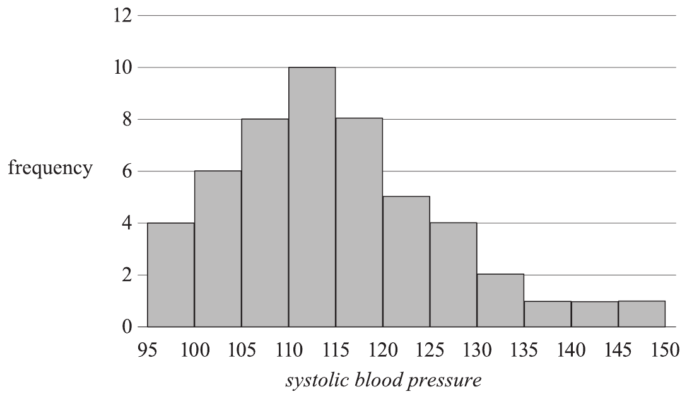
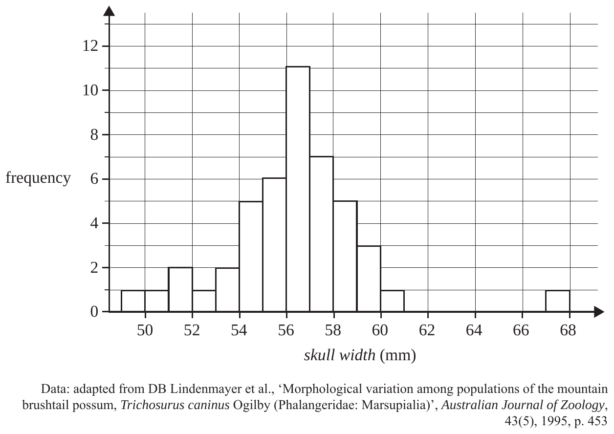
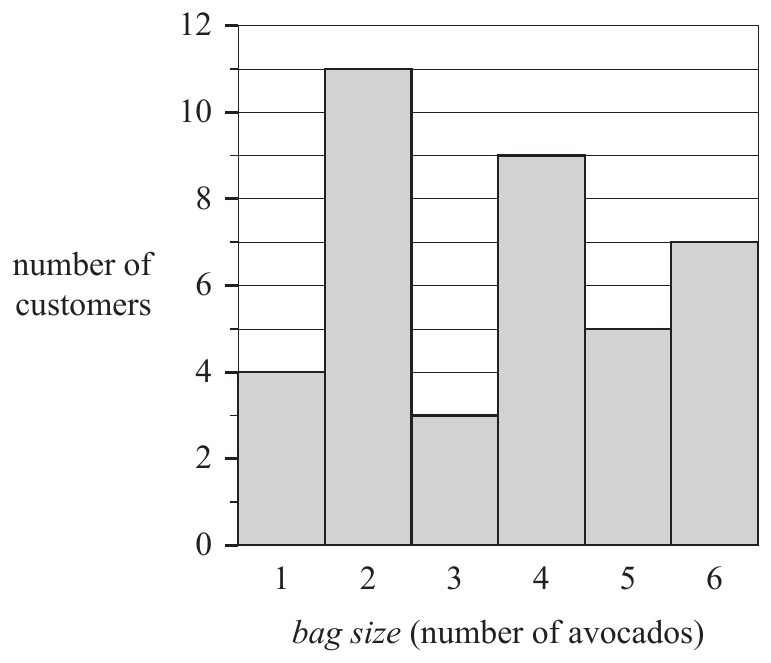

Organising and picturing numerical data
Numerical data (1A) is organised in a frequency table, displayed in a histogram, and then described by its shape, any outliers, its centre and its spread.
By the end of this page you can
- build a frequency table for numerical data, grouping it into intervals when needed
- read a histogram: count values, find totals and percentages
- describe a distribution as symmetric, positively skewed or negatively skewed, name any outliers, and estimate the centre and spread
1. Frequency table: a few different values
When a discrete variable only takes a handful of values, list each value with its count. Here are the shoe sizes of 46 adults from a VCAA exam:
| Shoe size | Number | Percentage (%) |
|---|---|---|
| 5 | 2 | 4.3 |
| 6 | 4 | 8.7 |
| 7 | 7 | 15.2 |
| 8 | 12 | 26.1 |
| 9 | 9 | 19.6 |
| 10 | 6 | 13.0 |
| 11 | 3 | 6.5 |
| 12 | 2 | 4.3 |
| 13 | 1 | 2.2 |
| Total | 46 | 100 |
Percentage = count ÷ total × 100, so size 8 is 12 ÷ 46 × 100 = 26.1%. The rounded percentages add to 99.9, which is fine: say “100 (allow for rounding)”.
A histogram of this data has one bar per shoe size. The bars touch because the scale is numerical, and each label sits under the middle of its bar.
2. Grouped frequency table: lots of different values
When the data has many different values (usually continuous data, like money or volume), group it into equal-width intervals. Here is GDP per capita, in dollars per year, for 41 African countries, read from a VCAA histogram:
| GDP per capita ($ per year) | Number | Percentage (%) |
|---|---|---|
| 0 to less than 1000 | 2 | 4.9 |
| 1000 to less than 2000 | 11 | 26.8 |
| 2000 to less than 3000 | 12 | 29.3 |
| 3000 to less than 4000 | 5 | 12.2 |
| 4000 to less than 5000 | 3 | 7.3 |
| 5000 to less than 6000 | 6 | 14.6 |
| 6000 to less than 7000 | 2 | 4.9 |
| Total | 41 | 100 |
3. The histogram
A histogram is the standard display for numerical data:
- the horizontal axis is a number scale, labelled with the variable (and units)
- each bar covers one interval, and the bars touch (no gaps, unless an interval has no data)
- bar height is the frequency (or the percentage frequency)
4. Describing the distribution
Describe four features, in this order:
Sketches only (not real data). The skew is named after the tail, not the peak. A peak on the left means the tail goes right: positively skewed.
Worked example. The volume, in m³, of the trunks of 31 black cherry trees:
Data: VCAA 2023 NHT Exam 1, Questions 2–4 (‘Black Cherry Trees’, Wolfram Data Repository)- Shape: the peak is on the left and the tail runs to the right → positively skewed.
- Outliers: the tree in 2.0–2.2 is cut off from the rest by an empty interval → a possible outlier.
- Centre: 31 trees, so the middle tree is the 16th. Counting up: 3, then 3 + 8 = 11, then 11 + 8 = 19. The 16th tree is in 0.6 to 0.8 m³.
- Spread: volumes range from about 0.2 to 2.2 m³.
“The distribution of [variable] is [shape] with [a possible outlier at … / no outliers]. The centre is in [interval], and values range from about [low] to [high].”
Example: The distribution of volume is positively skewed with a possible outlier at 2.0–2.2 m³. The centre is in 0.6–0.8 m³, and volumes range from about 0.2 to 2.2 m³.
“Most students recognised the distribution was positively skewed. It was acceptable to add that there were no outliers.”VCAA 2020 Exam 2 report, Question 1a (Further Mathematics; the display was a stem plot)
“The term ‘skewed’ only applies to univariate data plots, whereas this question referred to a bivariate data plot.”VCAA 2014 Exam 2 report, Question 2c (Further Mathematics)
Histogram lab
Pick a VCAA data set. Switch between a frequency and a percentage axis, slide the cut-off to count the values below it, then decide the shape.
What is the shape?
Is there a possible outlier?
Video lesson
Watch this for more worked examples of frequency tables, histograms and describing shape.
Displaying and describing the distributions of numerical variables · MaffsGuru · YouTube · open on YouTube if the video does not loadReal VCAA exam questions
Attempt each question before checking. After you answer, you will see the solution and, where we have it, what the examiners said.
Use the following information to answer Questions 1 and 2 on this page (Questions 4 and 5 in the exam).
The systolic blood pressure of 50 people was recorded. The results are summarised in the histogram below.

For this group of people, the distribution of their systolic blood pressure is best described as
Uses the histogram in Question 1.
The percentage of these people with a systolic blood pressure less than 120 is closest to
Use the following information to answer Questions 3 and 4 on this page (Questions 1 and 2 in the exam).
The histogram below displays the distribution of skull width, in millimetres, for 46 female possums.

The shape of the distribution is best described as
“The centre of this distribution is in the group 56–57. Disregarding the possible outlier, we can see that the graph is more spread to the left of the centre than it is to the right. That is, the lower tail is longer than the upper tail. Therefore, we say that the shape of the distribution is negatively skewed (skewed to the left), with a possible outlier.”Common mistake: 54% chose E. Cover up the outlier first, then look at the tails of what is left: the lower tail is longer. VCAA 2022 Exam 1 report (Further Mathematics), Question 1
Uses the histogram in Question 3.
The percentage of the 46 possums with a skull width of less than 55 mm is closest to
Use the following information to answer Questions 5 and 6 on this page (Questions 1 and 2 in the exam).
At a fruit shop, customers can buy avocados in bags.
The bag size ranges from one to six avocados per bag.
The histogram below shows the number of customers who bought each bag size on a particular day.

The median bag size bought by customers on the day was
“Sum all columns = 4 + 11 + 3 + 9 + 5 + 7 = 39Common mistake: 17% chose C (3.5), the middle of the axis (1 to 6). The median is the middle customer: count up the bars 4, 15, 18, 27 until you pass 20. (The median is covered fully in 1F.) VCAA 2025 Exam 1 report, Question 1
The median is the 20th value.
The 20th value is in the fourth column (bag size 4).”
Uses the histogram in Question 5.
The total number of avocados sold in bags was
“Total = 1 × 4 + 2 × 11 + 3 × 3 + 4 × 9 + 5 × 5 + 6 × 7 = 138”Common mistake: 20% chose A (39), which is the number of customers. Each customer bought a bag, so multiply each bag size by its number of customers. VCAA 2025 Exam 1 report, Question 2
Summary
- Few values → list each value. Many values → group into equal intervals (lower end included).
- A histogram has a number scale and touching bars. Total = sum of the bar heights.
- Percentage = (sum of the bars you need) ÷ total × 100.
- Describe shape, outliers, centre and spread. Skew is named after the long tail.
Print the A4 page below and glue it into your bound reference.
Displaying numerical data
Grouped frequency table
| GDP ($) | Number | % |
|---|---|---|
| 0 – <1000 | 2 | 4.9 |
| 1000 – <2000 | 11 | 26.8 |
| 2000 – <3000 | 12 | 29.3 |
| 3000 – <4000 | 5 | 12.2 |
| … to 7000 | 11 | 26.8 |
| Total | 41 | 100 |
Equal-width intervals. A value on a boundary goes in the higher interval (lower end included).
Histogram
Number scale · bars touch · height = frequency
Reading a histogram
- Total = add all the bar heights (2 + 11 + … = 41).
- Count = add the bars you need. Below $2000: 2 + 11 = 13.
- % = count ÷ total × 100 = 13 ÷ 41 × 100 = 31.7%.
- Middle value of n: count up the bars to the (n + 1) ÷ 2 th value. 41 → 21st → 2000–3000.
Shape: name the long tail
Describe: shape · outliers · centre · spread.
“Positively skewed with a possible outlier at 2.0–2.2 m³. Centre in 0.6–0.8 m³; values range from about 0.2 to 2.2 m³.”
Which display?
- Histogram: one numerical variable (counts or measurements).
- Bar chart: one categorical variable (gaps between bars).
- Outlier: a value well away from the rest, usually after an empty interval.
- “Skewed” is only for one variable, never a scatterplot (2014 report).
⚠ Exam traps
- Set the outlier aside, then compare the tails. 54% called the possum skulls “approximately symmetric with a possible outlier”; the answer was negatively skewed with a possible outlier (VCAA 2022 Exam 1 Q1, 36% correct).
- Count × value for a total: 20% gave 39 customers instead of 138 avocados (VCAA 2025 Exam 1 Q2).
- The middle value is the middle data value, not the middle of the axis: 17% chose 3.5 (VCAA 2025 Exam 1 Q1).
- Percent means ÷ total: 12 possums is 26%, not 12% (VCAA 2022 Exam 1 Q2).